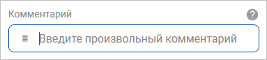

Свойства компонента интерфейса, унаследованного от компонента «ПолеВвода»
Поле для ввода и редактирования данных разных типов.

Иерархия наследования
- Компонент (абстрактный)
Свойства
- ВыравниваниеСодержимогоПоГоризонтали
- Способ выравнивания текста в поле ввода: Начало, Центр, Конец, ПоШирине, Авто — значение Начало.
- ДопустимыеТипы
- Перечень типов, значения которых поле ввода может редактировать
- ДиапазонВыделения
- Только чтение. Границы выделенного текста
- Заголовок
- Заголовок поля ввода
- Значение
- Значение поля ввода. Изменяется при переходе на другой компонент интерфейса
- Изображение
- Значение типа ДвоичныйОбъект.Ссылка. Ссылка на двоичные данные картинки, которая будет показана в начале поля ввода
- Картинка
- Картинка, которую использует поле ввода
- НастройкиВводаДатыВремени
- Настройки редактирования даты и времени. Применяется если поле ввода редактирует значения типов Дата, ДатаВремя, Время, Момент
- НастройкиВводаСсылок
- Настройки ввода для отдельных допустимых ссылочных типов
- НастройкиВводаСтроки
- Настройки редактирования значений типа Строка
- Описание
- Используется только в веб-интерфейсе. Напротив заголовка поля ввода будет показана иконка с вопросом. Нажатие на иконку открывает подсказку с данной строкой
- ПодсказкаВвода
- Подсказка, отображается внутри поля ввода
- ПризнакОбязательности
- Признак того, что в поле должно быть введено значение. Выглядит как красная звездочка перед заголовком. Установка этого признака имеет только визуальное значение и не оказывает никакого влияния на функционирование поля ввода
- РежимВыбораИзСписка
- Режим выбора из списка:
- НеИспользовать — список выбора не используется
- Использовать — можно выбирать значения из списка выбора или вводить любые допустимые значения вручную
- ТолькоЗначенияИзСписка — можно выбирать из списка или вводить вручную только те значения, которые содержатся в списке выбора
- РежимПароля
- Признак того, что вводимые символы должны маскироваться символами *
- СообщениеИнформация
- Назначение поля ввода. Отображается когда свойство СтилиОформления не содержит ни значения ЦветКоннотацияОтрицательная, ни ЦветКоннотацияПоложительная. Отображается в две строки текста под полем ввода
- СообщениеОшибка
- Сообщение об ошибке заполнения поля ввода. Отображается когда свойство СтилиОформления имеет активное (примененное последним из списка) значение ЦветКоннотацияОтрицательная. Отображается в две строки текста под полем ввода
- СообщениеУспех
- Сообщение об успешном заполнении поля ввода. Отображается когда свойство СтилиОформления имеет активное (примененное последним из списка) значение ЦветКоннотацияПоложительная. Отображается в две строки текста под полем ввода
- СообщениеПредупреждение
- Предупреждающее сообщение. Отображается когда свойство СтилиОформления имеет активное (примененное последним из списка) значение ЦветКоннотацияПредупреждающая
- СписокВыбора
- Список значения для выбора в поле ввода
- СтилиОформления
- Стили оформления поля ввода. «1С:Кабинет сотрудника» применяет эти стили в порядке их перечисления
- ТекстРедактирования
- Текущий текст редактирования. Обновляется через 200 мс после окончания ввода текста пользователем
События
- ПриАвтоПодборе
-
«1С:Кабинет сотрудника» вызывает это событие:
- Во время ввода текста, с некоторым интервалом. Значение
Событие.Текстможет быть пустым, если пользователь стер текст в поле ввода; - При нажатии клавиши «Стрелка вниз», кнопки открытия списка выбора или при активизации поля ввода мышью. Значение
Событие.Текстможет быть пустым, если событие вызывается, когда пользователь еще не начал редактировать текст в поле. Если пользователь находится в процессе редактирования текста, в событии находится этот редактируемый текст.
- Во время ввода текста, с некоторым интервалом. Значение
- ПриИзменении
-
«1С:Кабинет сотрудника» вызывает это событие после установки нового значения в свойство
ЗначениеПример YAML-файла:
ВидЭлемента: КомпонентИнтерфейса ОбластьВидимости: Подсистема Ид: d0d52e24-3a69-4d1d-8f27-cefcf359c116 Имя: МоеПолеВвода Наследует: Тип: ПолеВвода ПриИзменении: ОбработчикПриИзмененииСигнатура обработчика события на встроенном языке:метод ОбработчикПриИзменении(Источник: ПолеВвода, Событие: СобытиеПриИзменении<любой>) ; - ПриНажатииВвода
-
«1С:Кабинет сотрудника» вызывает это событие при нажатии пользователем клавиши Ввод. Перед вызовом
события введенные данные записываются в поле данных, связанное со свойством Значение. Если запись данных невозможна по причине их
некорректности (например, несоответствия маске или доступному значению из списка), то запись не происходит и событие не
вызывается.Пример YAML-файла:
ВидЭлемента: КомпонентИнтерфейса ОбластьВидимости: Подсистема Ид: d0d52e24-3a69-4d1d-8f27-cefcf359c116 Имя: МоеПолеВвода Наследует: Тип: ПолеВвода ПриНажатииВвода: ОбработчикПриНажатииВводаСигнатура обработчика события на встроенном языке:метод ОбработчикПриНажатииВвода(Источник: ПолеВвода, Событие: СобытиеКомпонента) ;